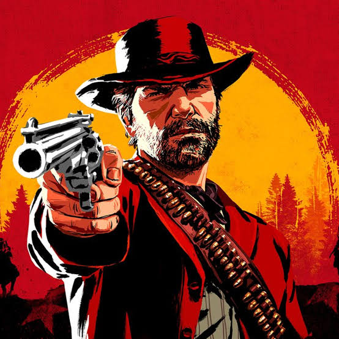
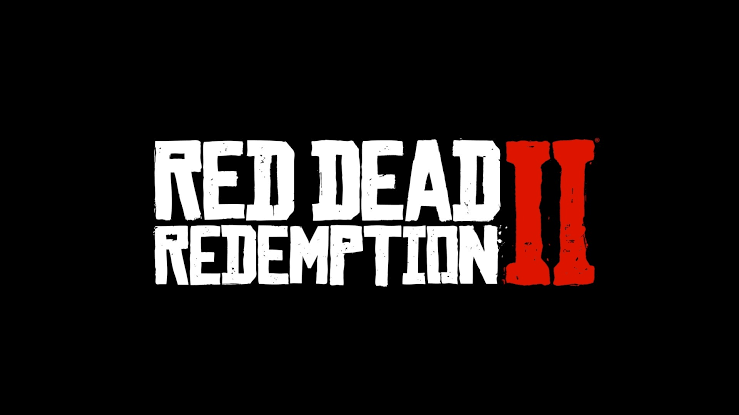
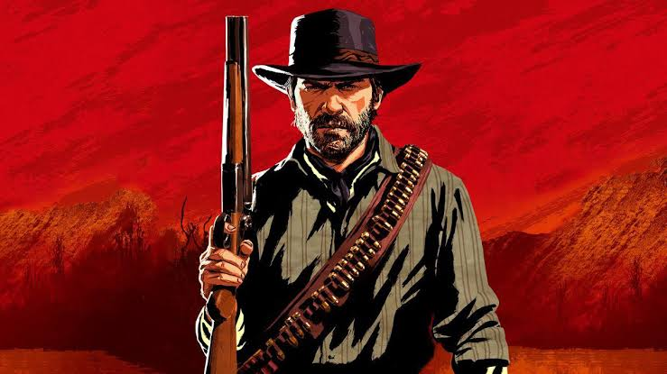

Lançado pela Rockstar Games em 2018, Red Dead Redemption 2 é aclamado como uma das maiores obras-primas da história dos videogames. Ambientado em 1899, o jogo retrata o fim da era do Velho Oeste americano, acompanhando a jornada da gangue Van der Linde. O título se destaca por sua narrativa madura, personagens profundos e uma atenção aos detalhes que revolucionou o nível de imersão no mundo dos jogos eletrônicos.
O jogador assume o papel de Arthur Morgan, um fora da lei leal e braço direito de Dutch van der Linde. Conforme o mundo ao redor se moderniza e a lei se aproxima, a gangue é forçada a fugir constantemente. A trama explora temas complexos como lealdade, redenção, transformação pessoal e a inevitável derrocada de um estilo de vida que já não encontra mais espaço no mundo moderno.
O mundo aberto de Red Dead Redemption 2 é vivo, dinâmico e impressionante em escala. Os cenários variam entre montanhas nevadas, florestas densas, pântanos perigosos e cidades em pleno crescimento industrial. Cada ambiente possui um ecossistema próprio com centenas de espécies de animais, além de eventos aleatórios e personagens não jogáveis que reagem de maneira única às ações e à reputação do jogador.
A jogabilidade combina tiroteios realistas, exploração a cavalo, caça, pesca e um sistema de honra que molda como o mundo percebe Arthur. O ritmo do jogo é intencionalmente cadenciado, incentivando o jogador a desacelerar e vivenciar pequenas interações do cotidiano, como acampar sob as estrelas, cuidar do seu cavalo ou conversar com os membros da gangue ao redor da fogueira.
Mais do que um simples jogo de ação, Red Dead Redemption 2 é uma experiência cinematográfica e emocional inesquecível. Com uma trilha sonora marcante, atuações de voz impecáveis e um visual deslumbrante, o título se consolida não apenas como um marco na indústria dos games, mas como um exemplo supremo de arte e narrativa interativa.


